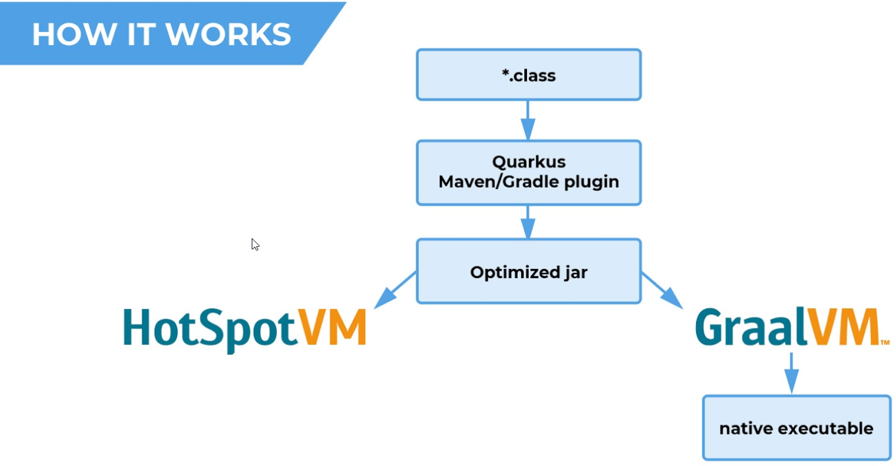
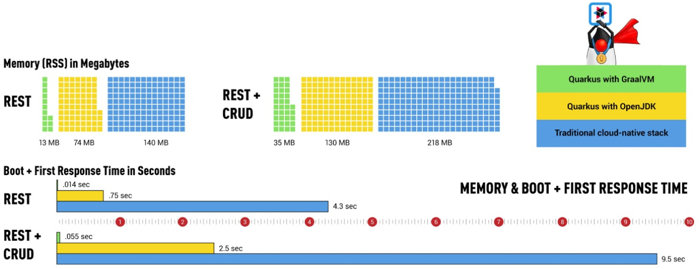

Java container optimization
Scope


Goal
Do more with less!
- CPU
- Memory footprint
- IO
- Security
Summary
Container
JVM
Framework

Container
Sizing
- Disk storage
- Registry
- Host
- Download performance
- quick launch
Security
“An image should only include the executable and libraries required by the app itself; all other OS functionality is provided by the OS kernel within the underlying host OS.” -NIST-
- Attack surface vulnerability are limited
- Container immutability is guarantee
- Secure secret variables unreachable
Strategies
Small base image
Final image optimization
- Since December 2014
- 8 active contributors
docker-slim build \
--include-exe cut --include-exe sed \
--include-path /etc/pki \
--http-probe \
--show-clogs \
rh-sso/keycloak-gatekeeper70
| Project | Parent | origin | slim | x |
|---|---|---|---|---|
| Keycloak Gatekeeper | CentOS | 200 | 20 | 10 |
| Keystore | Distroless | 78.8 | 65.3 | 1.2 |
| CentOS | 248 | 65.7 | 3.8 |
distribution agnostic
reduce surface attack
parent contagion
scanner detection
docker in docker
Conclusion
Distroless
docker-slim

JVM

OpenJDK

OpenJDK Hotspot
free and open-source implementation of Java SE.
- From 11, Class Data Sharing
- Java Platform Module System - Jigsaw
Container friendly
- > 8u131
- > 8u191
- Java 11
Eclipse OpenJ9
high performance, scalable, JVM implementation that is fully compliant with the Java Virtual Machine Specification.
- JDK 8-11
- Container friendly
- Class Data Sharing
- Dynamic Ahead-Of-Time
- Startup mode (quick, virtualized)
GraalVM

next generation Hotspot VM.
- Platform
- Polyglot
- Graal compiler
- Community / Enterprise edition
Native image

- library
- full
LTS / Production Ready
- OpenJDK 8: end Q3 2023
- OpenJDK 11: end Q4 2022-2024
- OpenJDK 17: init Q3 2021
- GraalVM: init 2019
- v19 support 8 only
- 11 work in progress
Performance
Methods
- Differents use cases:
- Stream only
- Microprofile
- SpringBoot
- RH-SSO 7.3
- Two automatic measures:
- Start time o process time
- Memory
- Latency (mean, 50%, 90%)
- Throughput
Results
JRE
OpenJDK 8
OpenJDK 11
OpenJ9
GraalVM
Java Platform Module System

Custom JRE
# JDK11
sdk use java 11.0.4.j9-adpt && du -hcs $JAVA_HOME
# 300M /java/11.0.4.j9-adpt
# Compile
javac CountUppercase.java
# Deps
jdeps --print-module-deps CountUppercase.class
# Generate distribution
jlink --no-header-files --no-man-pages --compress=2 --strip-debug \
--add-modules $(jdeps --print-module-deps CountUppercase.class) \
--output java-base
# Custom distribution
ls java-base/ && du -hcs
# bin conf legal lib release -> java-base/ 39M
JAVA_HOME=$PWD/java-base
Java native frameworks
Native?

Candidates
Code
- Micronaut vs Quarkus
-import io.micronaut.http.annotation.Controller;
+import javax.inject.Inject;
-@Controller("/conferences")
+@Path("/conferences")
+@Produces(MediaType.APPLICATION_JSON)
public class ConferenceController {
- private final ConferenceService conferenceService;
+ @Inject
+ private ConferenceService conferenceService;
- public ConferenceController(ConferenceService conferenceService) {
- this.conferenceService = conferenceService;
- }
- @Get("/random")
- public Conference randomConf() {
+ @Path("/random")
+ @GET
+ public Conference randomConf() {
return conferenceService.randomConf();
}
}
- Quarkus vs Spring
-import io.micronaut.http.annotation.Controller;
+import org.springframework.web.bind.annotation.RequestMapping;
-@Controller("/conferences")
+@RestController
public class ConferenceController {
+ @Autowired
+ private ConferenceService conferenceService;
- private final ConferenceService conferenceService;
- public ConferenceController(ConferenceService conferenceService) {
- this.conferenceService = conferenceService;
- }
-
- @Get("/random")
- public Conference randomConf() {
+ @RequestMapping("/conferences/random")
+ public Conference randomConf() {
return conferenceService.randomConf();
}
}
Performance
Quarkus
Supersonic Subatomic Java


Demo
Limitations
| Not Supported | Limited |
|---|---|
| Dynamic Classloading | CDI |
| Invoke Dynamic | Reflection * |
| Finalizer | Dymanic proxy * |
| Security Manager | JNI * |
| JVM TI, JMX, … | Static initializer |
| Native Windows | |
| Native debug |
Conclusion
Quarkus + Microcontainer